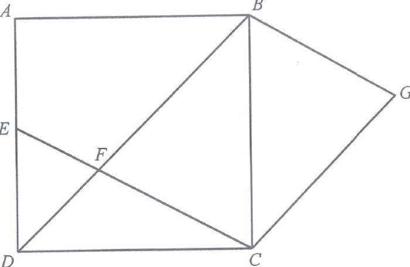

In Figure 2, $ABCD$ is a square. It is given that $E$ is a point lying on $AD$. $BD$ and $CE$ intersect at the point $F$. Let $G$ be a point such that $BG \parallel EC$ and $CG \parallel DB$.
(a) Prove that (i) $\triangle BCG \cong \triangle CBF$, (ii) $\triangle BCF \sim \triangle DEF$. [4 marks]
(b) Suppose that $\angle CBF = \angle EFB$ ... (see step for exact hypothesis used).
(b) Let $BC = \ell$. (i) Express $DF$ in terms of $\ell$. (ii) Someone claims that $AE > DF$. Do you agree? Explain your answer. [4 marks]

$BC = BC$ (common side)
$\angle BCG = \angle CBF$ (alt. $\angle$s, $CG \parallel DB$)
$\angle CBG = \angle BCF$ (alt. $\angle$s, $BG \parallel EC$)
$\therefore \triangle BCG \cong \triangle CBF$ (A.S.A.)
$\angle CBF = \angle EDF$ (alt. $\angle$s, $BC \parallel ED$)
$\angle BFC = \angle DFE$ (vert. opp. $\angle$s)
$\angle BCF = \angle DEF$ ($\angle$ sum of $\triangle$)
$\therefore \triangle BCF \sim \triangle DEF$ (A.A.A.)
By (a)(i), $\triangle BCG \cong \triangle CBF$, so $\angle BGC = \angle BFC$.
Since $CG \parallel DB$, $\angle BCF = \angle BGC$ (alt. $\angle$s).
Hence $\angle BCF = \angle BFC$.
$\therefore$ in $\triangle BCF$, the equal base angles give
$$BF = BC = \ell .$$
$BD \cos 45^\circ = \ell \Rightarrow BD = \dfrac{\ell}{\cos 45^\circ} = \sqrt{2}\,\ell$.
$$\begin{aligned} DF &= BD - BF \\ &= \sqrt{2}\,\ell - \ell \\ &= (\sqrt{2}-1)\,\ell . \end{aligned}$$
$\triangle BCF$ is isosceles with $BC = BF$ (Step 3).
By (a)(ii), $\triangle BCF \sim \triangle DEF$; combined with $BC = BF$ we get $DE = DF$.
Since $AD = BC = \ell$,
$$\begin{aligned} AE &= AD - DE \\ &= AD - DF \\ &= \ell - (\sqrt{2}-1)\,\ell \\ &= (2-\sqrt{2})\,\ell . \end{aligned}$$
Now $AE = (2-\sqrt{2})\,\ell$ and $DF = (\sqrt{2}-1)\,\ell$.
Also $AE + DE = \ell$ and $DE = DF$, and since $\sqrt{2} < \tfrac{3}{2} = 1.5$,
$$DE = DF = (\sqrt{2}-1)\ell < \tfrac{1}{2}\,\ell.$$
So $AE = \ell - DE > \ell - \tfrac{1}{2}\ell = \tfrac{1}{2}\ell > DF$.